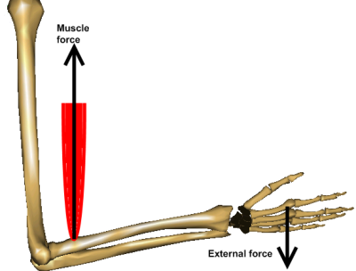
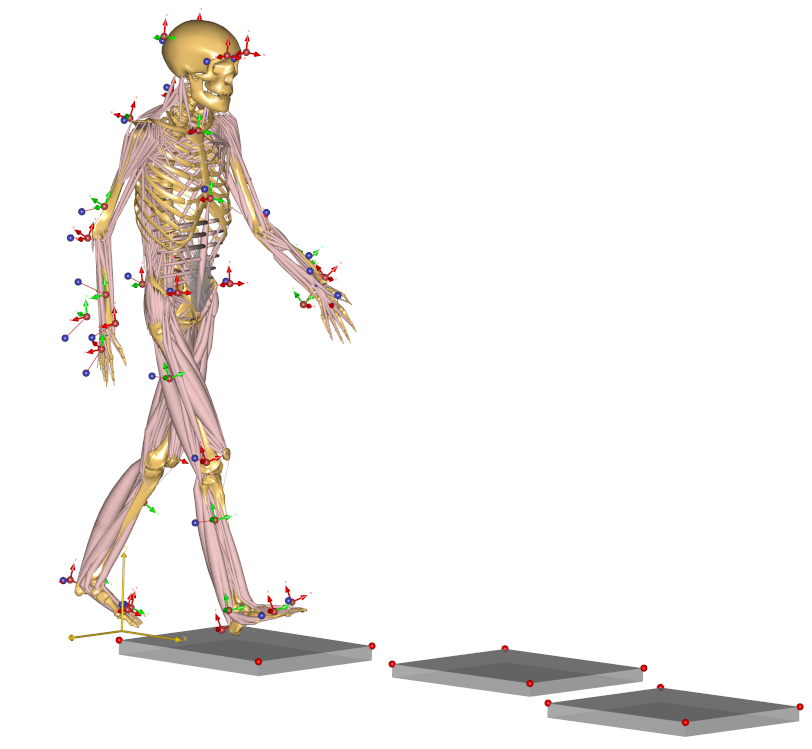
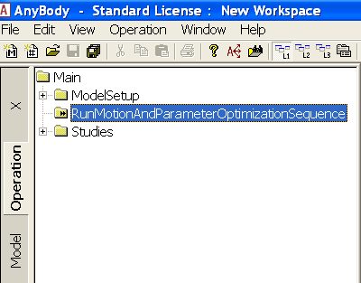

Lesson 5: Using real data¶
Without further ado, let us import a C3D file and drive a model. The AnyBody Modeling System offers you virtually unlimited ways of doing things, and probably more than the average user can comprehend, so we are going to start with a simple and top-down procedure: Version 1.2 of the AnyScript Managed Model Repository, on which this tutorial is built, which comes with the installation of AnyBody, contains two pre-cooked models that are very easy to drive with your own data and which contain some really neat features for data processing.
Go to the
ApplicationExamplesfolder to find a folder called MoCapModel.Take a copy of the entire folder and call it something else, for instance MyMoCapModel. You may even want to place it in a new directory parallel to
ApplicationExamples, for instanceApplicationMyModels, to avoid polluting the original examples. Please note that you have to put a copy of the libdef.any file into the new directory in that case.Browse into the MyMoCapModel folder.
Open the file
MoCap_LowerBody.main.anyin the AnyBody Modeling System.
As the name indicates, this is a gait model comprising only the lower extremities and the necessary part of the upper body for attachment of muscles. The motion imposed on the original model is gait over three force platforms, but you can easily modify this to any other movement, simply by importing a different C3D file to drive the model with.
In the top of the file you find a brief description of the procedure. Don’t worry about that for now, but browse a little further down to find this:
//***************************
//Set this to one if you want to run the motion and Parameter Optimization identification
#define MotionAndParameterOptimizationModel 0
//Set this to one if you want to run the inverse dynamic analysis
#define InverseDynamicModel 1
//Usually only have one of the two switches active
//***************************
These lines define the two model executions that you normally have to perform to process a new data set. When MotionAndParameterOptimizationModel=1, the system performs an optimization of the model to fit the C3D data you have recorded. This is much more than simply making the model follow the marker trajectories; it also optimizes the model parameters such as segment lengths and marker placements, based on the recorded data.
If InverseDynamicModel=1, then the system performs an actual dynamic analysis based on the parameters identified in the MotionAndParameterOptimization step.
Please make sure you have set the following:
//**************************************************
//Set this to one if you want to run the motion and Parameter
Optimization identification
#define MotionAndParameterOptimizationModel 1
//Set this to one if you want to run the inverse dynamic analysis
#define InverseDynamicModel 0
//Usually only have one of the two switches active
/**************************************************
Now please load the model and open up a new Model View. You should see the following skeleton without arms:

If you look closely, you can see that the skeleton is equipped with markers and if you zoom in a little, you can also see that the markers carry small coordinate systems with red and green arrows.

These are the marker points defined on the human body, and the red and green arrows designate directions in which the marker position is fixed versus free to be optimized. A free marker position is one that is not well-known by the clinician.
So why would we be in doubt about the position of a marker that we have placed? Well, clinicians place markers on the skin at an unknown distance from the bone, and even when a marker is placed on a bony landmark just below the skin, we are never quite sure which point that corresponds to in the bone’s local coordinate system. If we get those points wrong, the resulting motion of the model will also be inaccurate.
So the green arrows designate directions in which we have the greatest uncertainty about whether the marker is placed in the model as it was in the experiment. The good news is that we can optimize those marker placements exactly as we did in lesson 4. The model is set up to do this automatically, and if you are happy with the choice that has been made, you need not do anymore. Of course, if you use a different marker protocol there will be additional setting up to do, but only once until you have determined the parameterization that fits your protocol. In the interest of simplicity, we shall postpone the discussion of marker protocol setup.
In addition to the marker coordinates, the model considers the segment lengths to be variable, so the computation we are about to do will also automatically figure out how long the segments are, and thereby where the joints are placed. Pretty much any parameter in a model can be made variable but not all parameters will be determined well by the marker trajectory data and not all parameters can be determined at the same time because the mocap data only contains limited information and because some parameters can create mutual indeterminacies. For instance, if the model has no movement of a specific joint, then it is not possible to get information about the location of that joint or about the lengths of adjacent segments from the marker data.
Without further ado, let us perform the optimization:
In the Operation Tree you find the MotionAndParameterOptimizationSequence. Select it and click the “Run” button.

You will see the model walking repeatedly over the force platforms, sometimes slowly and sometimes a bit faster depending on the speed of your computer and the progress of the computation. The optimization will take a few minutes to complete and it is speeded up significantly if you switch the Model View update off during the process. The final message you get is:
#### Macro command > classoperation Main.Studies.ParameterIdentification "Save design" --file="GaitNormal0003-processed-OptimizedParametersTest.txt"
Main.Studies.ParameterIdentification : Saving design...
It means that things have gone fine, the optimization has converged, and the optimized values of the variable parameters have been saved on a text file for later use.
Before we continue, let us ponder for a moment when it is necessary to perform this optimization. The results of the optimization in summary are the following:
Updated anthropometrical parameters.
Updated marker locations.
The movement.
Within a brief time we can safely presume that the first is constant for a particular test subject. This means that if we have once and for all determined and saved the anthropometrical parameters of this subject, then we probably need not include them in the optimization again.
We can usually presume that the marker locations on the body are constant within a given trial or series of trials performed with the same subject with the same markers attached. However, if the markers have been detached or relocated, then obviously the optimization of marker positions must be done again.
Finally, the movement is different for each trial, so this part of the optimization we have to do again for each new recording. However, for most cases, the computational effort of performing the optimization with all the parameters is modest, to the casual user may elect to simply redo the full optimization for each trial as we shall do later in this tutorial.
Let us now run the actual inverse dynamics analysis. We must first change the settings in the main file:
//************************************************
//Set this to one if you want to run the motion and Parameter Optimization identification
#define MotionAndParameterOptimizationModel 0
//Set this to one if you want to run the inverse dynamic analysis
#define InverseDynamicModel 1
//Usually only have one of the two switches active
//************************************************
After reload, a new model including muscles and a new operation are available:

This operation contains everything that is necessary to run the analysis: It loads the optimized model parameters that were saved previously; if necessary, it performs calibration movements to adjust the tendon lengths to the lengths of the bones; and finally executes a dynamic analysis to determine forces in the system. Click the InverseDynamicAnalysisSequence and then click the “Run” button.
The model starts walking across the force platforms. It walks slowly due to the very high amount of detail of the model, requiring the computer to continuously calculate forces in more than 300 muscles. When the analysis is finished, you can open up a Chart view and investigate the results, for instance the hip joint reaction forces:

Importing new motion data¶
So we have seen the model optimize its parameters and we have seen it perform a dynamic analysis on existing data that somebody else has defined. But here comes the real point of the application:
Processing a different motion is exactly the same!
All we have to do is to replace the C3D file containing the motion data. The MoCapModel folder already contains a few C3D files located in the subfolder Input that we can try. All we have to do is to make the model point at a different file. A few lines into the Main file, you find this:
#include "TrialSpecificData.any"
This file contains the settings you typically want to change when
Double-click the TrialSpecificData.any file name, and the file opens up in a new window. Then, just a few lines down, refer to the new filename into the model:
//Name of the C3D file to be analysed
AnyString NameOfFile ="§GaitFast0001-processed§"; //Write the name of the file here
Since this is a new C3D file from a new trial, we also need to run the kinematic optimization again, so we change the setting in the main file back to the MotionAndParameterOptimization option:
//Set this to 1 if you want to run the motion and Parameter Optimization identification
//************************************************
#define MotionAndParameterOptimizationModel 1
//Set this to 1 if you want to run the inverse dynamic analysis
#define InverseDynamicModel 0
This is all there is to it. We can now reload the model. To see the model moving (without doing the parameter optimization just now), locate and run the Kinematics operation in the Operation tree:

The movement seems to work fine and you will notice that this gait pattern is a little different from before. The steps are longer and the posture indicates that this is a person in a hurry.

Now is the time to run the MotionAndParameterOptimizationSequence. It takes a bit of time, and again you can speed up the process by switching off the update of the Model View window. Eventually, the process comes to an end and you get the message:
Optimization converged
********************************************************************
#### Macro command > runmacro "SaveMacroOperation-Save.anymcr"
#### Macro command > classoperation Main.ModelSetup.SaveMacroOperation "Save AnyString to file" --file="RunMacroOperation-Save.anymcr"
#### Macro command > runmacro "RunMacroOperation-Save.anymcr"
#### Macro command > classoperation Main.Studies.ParameterIdentification "Save design" --file="GaitFast0001-processed-OptimizedParameters.txt"
Main.Studies.ParameterIdentification : Saving design...
#### Macro command > operation Main.Studies.MotionOptimization.Kinematics
#### Macro command > run
So we can change the model setting in the Main file again, reload and run the actual analysis, i.e. the InverseDynamicAnalysisSequence operation:
//************************************************
//Set this to one if you want to run the motion and Parameter Optimization identification
#define MotionAndParameterOptimizationModel 0
//Set this to one if you want to run the inverse dynamic analysis
#define InverseDynamicModel 1
//Usually only have one of the two swicthes active
//************************************************
Which, after the analysis can provide a new hip joint force profile documenting that faster gait leadt to higher hip joint forces.
Using full-body models¶
Many motion experiments deal with the entire body as opposed to just the lower extremities. The AnyScript Model Repository contains another pre-cooked model for this purpose, and it will reveal that there is more data in the C3D file we just imported than we saw in the MoCap_LowerBody model.
Therefore, we can use the MoCap_FullBody model from the directory we copied before. In MoCap_FullBody.main.any, make sure the MotionAndParameterOptimizationModel is the active operation:
//Set this to 1 if you want to run the motion and Parameter Optimization identification
//************************************************
#define MotionAndParameterOptimizationModel 1
//Set this to 1 if you want to run the inverse dynamic analysis
#define InverseDynamicModel 0
//Usually only have one of the two swicthes active so set the inactive analysis to 0
//************************************************
In TrialSpecificData.any, refer to the new c3d file:
<AnyFolder TrialSpecificData={
//Name of the C3D file to be analysed
AnyString NameOfFile ="§GaitFast0001-processed§"; //Write the name of the file here
Please load the model and open a Model View if you do not already have one. You will see the model as before, but now with the arms included.

Select and run the RunMotionAndParameterOptimizationSequence in the Operations tree:

The model starts walking repeatedly over the force platforms including the arm motions while it tries to optimize segment lengths and marker positions. It takes three iterations and a little more time than before to optimize the model because this is a much larger problem, but as before you can speed up the process if you switch off the update of the Model View Window. It is possible to monitor the convergence of the optimization problem from a Chart window like this:

Eventually, the optimization process terminates and you can switch to the InverseDynamicAnalysis:
//Set this to 1 if you want to run the motion and Parameter Optimization identification
//************************************************
#define MotionAndParameterOptimizationModel 0
//Set this to 1 if you want to run the inverse dynamic analysis
#define InverseDynamicModel 1
//Usually only have one of the two switches active so set the inactive analysis to 0
//************************************************
… and perform the analysis of the entire body including the muscle forces. This full-body model with almost 1000 muscles included takes considerable time to analyze but will reward you with very detailed information about the function of the muscle system in gait as illustrated below.

In the next lesson we shall learn how to use weight functions to deal with markers dropping out of the measurements. This happens frequently in motion capture experiments and you can read all about in Lesson 6.
See also
Next lesson: Lesson 6: Weight functions.